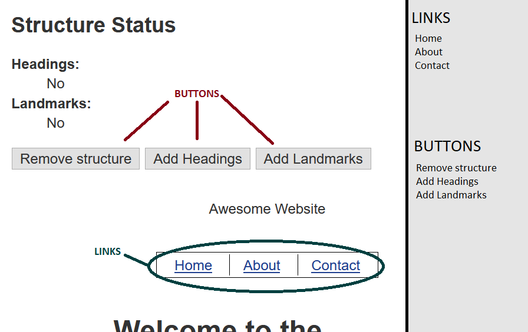

    <h2>How to Handoff</h2>
    <ul>
      <li>Make it clear in your mocks which elements are Links and which are Buttons
      <li>Make Links and Buttons visually distinct within your design system
    </ul>
    
    <h2>Example</h2>
    <p>Note: I am <strong>NOT</strong> a designer</p>
    